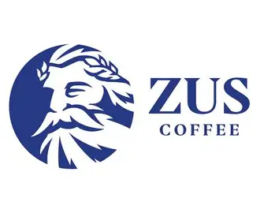
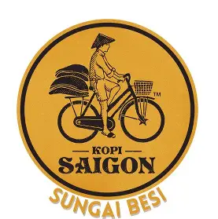
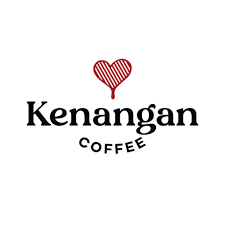
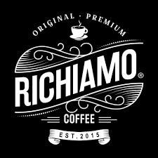
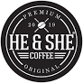

CHAIN CAFES REVIEWS
ZUS CAFE

Zus is a mainstream and commercial coffee house franchise that provides specialty beverages
REVIEWS ON ZUS COFFEE:
Workers:
1. Amanda Teoh: “Working here is honestly really fun to the point where Im excited to go to work everyday! I have really learnt and grown a lot not only in my barista skills, but management knowledge as well. I can also say that I have made long lasting friendships here at ZUS."
2. Muhamad Hafizin Bin Abdul Rahman: “I really like working at ZUS Coffee because they have given me many great opportunities to enhance my skills and I am happy when working with my incredible team. They have taught me a lot and given me advice on how to become the best."
3. Afriena Ariesya Binti Azlan: “All the laughter, side jokes, smiles on their faces mean a lot to me.☺️” [on teamwork]
Source: Zus Coffee Testimonial
Customers:
1. "The drinks are consistently well-made with good quality ingredients and packaging" - Beauty in the heat blog
2. "I love that they are not overpriced and I like their coffee. Their Gula Melaka is my regular order and I think it has coconut sugar that settles at the bottom of the cup, so if you don't stir it properly you'll suck it all up and you'll say it's very sweet." - Reddit user:kylin17
3. "delivering decent Arabica coffee at affordable prices behind a genuinely excellent app. For daily coffee drinkers, the savings compared to Starbucks are substantial and the quality holds up." - Malaysia4U Review
KOPI SAIGON

Kopi Saigon is coffee brand specializing in Vietnamese Coffee
REVIEWS ON KOPI SAIGON:
Workers:
1. "Rilex and fun workplace."- Indeed Kopi Saigon Review
2. "Good Opportunity. Best environment and free meals but hectic work during peak hours" - Glassdoor review
3. "Very friendly culture" - Glassdoor review
Customers:
1. "Still remember drinking this 2-3 years ago. Still tastes the same. Strong coffee taste but not too overpowering, with the right amount of milk. Seems like they're trying to expand the business to more places. Got mine at the LTAT branch." - Reddit user review
2. "Harga quite affordable and worth the taste sebab biasa kopi ni mostly atau dari RM10 plus yang Qila beli ni large size" - Review from Qila Rahamat on Lemon8
KENANGAN COFFEE

Kenangan Coffee is a coffee brand from Indonesia that now spans across ASEAN
REVIEWS ON KENANGAN COFFEE:
Workers:
1. "Good company. Easy to get promotion if u able to do the job and willing to do the time. Fun job and exciting. Pay is good too. 9 hours shift. Managment is okay. Hr is fine too." - Indeed Kenangan Coffee review
2. "Funplace n deal with customer. Enjoyable n nice experience but toxic people always there Management quite pleasant. The worst is workplace the teammate itself quite unpleasant for me" - Indeed Kenangan Coffee review
3. "Great work environment, but low salary." - Glassdoor Kenangan Coffee review
Customers:
1. "But the thing here, theyre not using the normal syrup, the used gula aren instead. It taste sweeter than usual latte. Overall the taste is very well balanced" - review from izzah on Lemon8
2. "Tried kenangan latte and i cannot go back to others. Its really good! Wish it has more branches" - Review by reddit user 'gustinex'
3. "Aku jarang nak compare ni, tapi aku nak bagi honest review lah. Spanish Latte dr Kenangan Coffee for me better dr jenama lain..." - Review by 'rusdi_official' on Threads
RICHIAMO COFFEE

Richiamo Coffeee is a chain coffee shop that offers beverages and snacks as well as specializing in Malaysian Cuisines
REVIEWS ON RICHIAMO COFFEE:
Workers:
1. "Fun workplace, welcoming environment. The environment of the workplace is so positive, staffs could share their opinion with the supervisor. No enourmous pressure while working, pay is acceptable with the workload." - Richiamo Coffee review on Indeed
2. "Richiamo Coffee Jalan Langgar id the best part time work I've ever do..." - Richiamo Coffee review on Indeed
3. "Exciting work environment. I enjoyed working with a fun team and appreciate the competitive salary offered" - Richiamo Coffee review on MAUKERJA
Customers:
1. "Its like a coffee place created by people who know nothing about coffee, for customers who want to pretend they like coffee." - Review by Reddit user 'playgroundmx'
2. "For me salted egg and choc lava croissant is nice. Other pastries subpar at best. Wont go near any of their drinks" - Review by Reddit user 'TheAverageGuy27'
3. "Nice ambience, calm and peaceful. Nasi lemak ayam berempah really great. Good place to do some paperwork also." - Review from Izamudin I on Wonderlog
KOLUMPO KOPITIAM

REVIEWS ON KOLUMPO KOPITIAM:
Workers:
There is no recorded reviews of Kolumpo Kopitiam
Customers:
1. "My second time here, as always the service is excellent and very fast. Staff were very courteous..." - Review by Yasmin Y on Wonderlog
2. "i recently had the pleasure of dining at Kolumpo Kopitian, and I must say it exceeded all my expectations. From the moment I walked in, the warm and inviting atmosphere made me feel right at home. .." - Review by Zuraidah Z on Wonderlog
3. "Although it was my first visit and first impressions were not ideal, I decided to give the place a chance. However, I encountered several issues that significantly impacted my experience: 1. Cleanliness: The tables appeared dirty and were not wiped down after previous customers, with food debris still visible." - Review by Pavin on Wonderlog
HE & SHE COFFEE

REVIEWS ON HE&SHE COFFEE:
Workers:
1. "Nice working environment. Comfortable, cold and clean workplace but low salary for part time worker." - He & She Coffee Review on Glassdoor
2. "Run for better life. i worked in HQ, all colleagues were so nice accepted people in my department so toxic. Can make coffee there. Not pay kwsp sosco, no lunch time, toxic people in department, not give proper equipment, dont have fix date for salary payment, bosses always pending payment for suppliers, micro management - He&She Coffee Review on Glassdoor
Customers:
1. "Had a great time here. The barista is friendly and gave me an opportunity to make my own coffee during non peak hour. Taught me about coffees. Recommended!" - Review by adam danial on Google Reviews
2. "Delicious food , great coffee and affordable price. Located in University Uitm Shah Alam." - Review by Amin Karim on Google Reviews
3. "Nice place for lepaking after tiring lectures, webinars, meetings etc. Affordable prices for a good range of coffee and pasteries. Depending on the barrista, your cuppocino can sometimes tastes walla! And sometimes it is just tasteless. Beware!" - Review by NanohanA on Tripadvisor website
CAFE MESRA